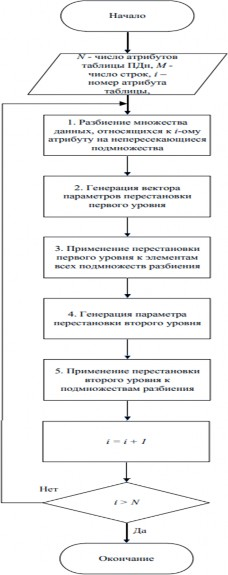

УДК 004.056
ПРОЕКТИРОВАНИЕ ПРОГРАММНЫХ СРЕДСТВ И АЛГОРИТМОВ ЗАЩИТЫ ДЛЯ КЛИЕНТ-СЕРВЕРНОГО ПРИЛОЖЕНИЯ С БАЗОЙ ДАННЫХ
Назарко А.В., Чернышова А.В.
ГОУ ВПО «Донецкий национальный технический университет» (г. Донецк) e-mail; nazar2539@gmail.ru,chernyshova.alla@rambler.ru
Источник: Назарко, А. В. Проектирование программных средств и алгоритмов защиты для клиент-серверного приложения с базой данных / А. В. Назарко, А. В. Чернышова // Современные информационные технологии в образовании и научных исследованиях (СИТОНИ-2021) : Материалы VII Международной научно-технической конференции, Донецк, 23 ноября 2021 года / Под общей редакцией В.Н. Павлыша. – Донецк: Донецкий национальный технический университет, 2021. – С. 289-297. – EDN LHGAQE.
Проблема обеспечения информационной безопасности для клиент- серверных приложений с базами данных
При проектировании клиент-серверных приложений с базами данных различного назначения для хранения больших и сверхбольших объемов информации проектировщики обычно делают выбор в пользу реляционной СУБД. На последующих стадиях проектирования и разработки обеспечение безопасности базы данных обычно сводится к выделению классов пользователей, их информационных потребностей и привилегий (формируется политика безопасности), проектированию системы разграничения доступа, а также выбору алгоритмов и программных средств защиты.
На всех стадиях жизненного цикла клиент-серверного приложения с базой данных, построенной на основе реляционной СУБД, возможны реализации большого числа угроз различных классов. Эти возможности следуют как из свойств самой реляционной модели данных, так и из особенностей реализации СУБД различными производителями и используемой модели разграничения доступа. Защита информации в реляционных базах данных имеет специфику, заключающуюся в том, что семантика обрабатываемых данных дает большие возможности по реализации различных угроз применительно к базе данных, чем, например, к файловой системе.
Угрозой информационной безопасности клиент-серверного приложения с базой данных назовем возможность воздействия на информацию, обрабатываемую в приложении, приводящую к искажению, уничтожению, копированию, блокированию доступа к информации, а также возможность воздействия на компоненты информационной системы, приводящую к утрате, уничтожению или сбою функционирования носителя информации или средства управления программно-аппаратным комплексом системы.
Угроза нарушения конфиденциальности данных включает в себя любое умышленное или случайное раскрытие информации, хранящейся в вычислительной системе или передаваемой из одной системы в другую. К нарушению конфиденциальности ведет как умышленное действие,
направленное на реализацию несанкционированного доступа к данным, так и случайная ошибка программного или неквалифицированного действия оператора, которая может привести к передаче по открытым каналам связи незащищенной конфиденциальной информации.
Угроза нарушения целостности включает в себя любое умышленное или случайное изменение информации, обрабатываемой в информационной системе или вводимой из первичного источника данных. К нарушению целостности данных может привести как преднамеренное деструктивное действие некоторого лица, изменяющего данные для достижения собственных целей, так и случайная ошибка программного или аппаратного обеспечения, приведшая к безвозвратному разрушению данных.
Для построения модели угроз клиент-серверных приложений с базами данных необходимо их идентифицировать. Необходимо не только провести работу по выявлению и анализу самих угроз, но и изучить и описать источники возникновения выявленных угроз. Такой подход поможет в выборе комплекса средств защиты. Например, нелегальный вход в систему может стать следствием воспроизведения начального диалога, подбора пароля или подключения к сети неавторизованного оборудования. Очевидно, для противодействия каждому из перечисленных способов нелегального входа нужны свои механизмы безопасности [1].
Идентификация источников угроз и построение модели угроз для клиент-серверного приложения с базами данных
Разработка системы информационной безопасности должна базироваться на определенном перечне потенциальных угроз безопасности и установлении возможных источников их возникновения. Проектирование конкретной системы безопасности для любого объекта, в том числе и для систем баз данных, предполагает выявление и научную классификацию перечня источников угроз безопасности.
Сформулируем перечень внешних и внутренних угроз информационной безопасности баз данных.
Внешними дестабилизирующими факторами, создающими угрозы безопасности функционированию клиент-серверных приложений с базами данных и СУБД, являются:
умышленные, деструктивные действия лиц с целью искажения, уничтожения или хищения программ, данных и документов системы, причиной которых являются нарушения информационной безопасности защищаемого объекта;
искажения в каналах передачи информации, поступающей от внешних источников, циркулирующих в системе и передаваемой потребителям, а также недопустимые значения и изменения характеристик потоков информации из внешней среды и внутри системы;
сбои и отказы в аппаратуре вычислительных средств;

вирусы и иные деструктивные программные элементы, распространяемые с использованием систем телекоммуникаций, обеспечивающих связь с внешней средой или внутренние коммуникации распределенной системы баз данных;
изменения состава и конфигурации комплекса взаимодействующей аппаратуры системы за пределы, проверенные при тестировании или сертификации системы.
Внутренними источниками угроз клиент-серверных приложений с базами данных и СУБД являются:
системные ошибки при постановке целей и задач проектирования клиент-серверных приложений с базами данных и их компонент, допущенные при формулировке требований к функциям и характеристикам средств обеспечения безопасности системы;
ошибки при определении условий и параметров функционирования внешней среды, в которой предстоит использовать клиент-серверное приложение с базой данных, в частности, программно- аппаратные средства защиты данных;
ошибки проектирования при разработке и реализации алгоритмов обеспечения безопасности аппаратуры, программных средств и баз данных;
ошибки и несанкционированные действия пользователей, административного и обслуживающего персонала в процессе эксплуатации приложения;
недостаточная эффективность используемых методов и средств обеспечения информационной безопасности в штатных или особых условиях эксплуатации приложения.
Полное устранение всех потенциальных угроз информационной безопасности клиент-серверных приложений с базами данных принципиально невозможно. Реальная задача состоит в снижении вероятности реализации потенциальных угроз до приемлемого для конкретной системы уровня. Приемлемость соответствующего уровня угроз может определяться областью применения, выделенным бюджетом или положениями действующего законодательства. Совокупный риск является достаточно сложной функцией уязвимости компонентов приложения. Различные негативные воздействия также достаточно сложным образом влияют на основные характеристики качества и безопасности клиент- серверных приложений с базами данных [2].
Проектирование программных средств и алгоритмов защиты клиент- серверного приложения с базами данных исходя из модели угроз
Алгоритм сокрытия пароля
Для снижения риска несанкционированного доступа к базе данных при помощи считывания паролей планируется использовать следующий алгоритм сокрытия паролей.
Используя алгоритм сокрытия, необходимо обеспечить и использование пароля неограниченной длины и любых символов, которые нравятся пользователю, безопасное и эффективное хранение пароля в базе данных, предотвращение любых атак с использованием SQL-инъекций, предотвращение атак, связанных с перемещением данных.
Если пароль будет утерян или скомпрометирован, должен произойти
«сброс», это означает, что для аутентификации не нужно хранить пароль в открытом виде. Один из способов решить эти проблемы - использовать односторонний хэш, то есть шифрование, которое невозможно расшифровать. Известны алгоритмы хеширования, такие как MD5-хеш, SHA-
Эти алгоритмы хороши тем, что независимо от размера данных, размер возвращаемых данных всегда один и тот же. MD5 имеет длину 128 бит, что составляет 16 байт. Одного алгоритма хеширования недостаточно, так как его легко взломать.
Для снижения риска взлома необходимо использовать самый надежный хэш алгоритм, доступный в нашей базе кода. И «засолить» наши пароли, то есть создать случайное значения для добавления в конец пароля, чтобы сделать его более уникальным. Это также необходимо для предотвращения анализа паролей, если использовать только алгоритм хеширования все одинаковые пароли будут иметь одинаковый хеш. При использовании случайного значения соли сохраненные хеши становятся уникальными, даже если используется один и тот же пароль. Также при авторизации будут подставляться в запрос не сами значения переменных, а их параметры, для предотвращения SQL-инъекций [3].
Из вышесказанного можно сформировать следующий алгоритм регистрации/авторизации.
Регистрация пользователя:
ввод имени пользователя;
ввод пароля;
создание случайной соли к паролю;
применение хеш алгоритма;
сохранение имени пользователя, хэша и соли в таблице базы данных.
Авторизация пользователя:
таймаут 2 секунды, для замедления атак при помощи грубой
силы;
получение имени пользователя и пароля;
получение соответствующей записи из базы данных;
использование соли из базы данных, чтобы создать хеш к
паролю;
сравнение полученного хэша с хешем пароля, который хранится в базе данных;
возврат «Не удалось войти в систему» или «Успешная авторизация»; (не показываем более детальные сообщения «пользователь не
найден» или «неверный пароль», поскольку это дает нарушителю много информации).
Алгоритм разграничения прав доступа
Для снижения риска несанкционированного доступа к информации, на которую у пользователя недостаточно привилегий, планируется использовать алгоритм разграничения прав доступа пользователя. Этот алгоритм включает в себя создание ролей на серверной части клиент-серверного приложения с базой данных, внесения пользовательских записей в определенную роль, присвоение каждой роли своего набора привилегий и прав доступа на просмотр/редактирование/создание таблицы, и обработку этих ролей и привилегий на клиентской части приложения.
Также для более защищенного уровня информационной безопасности принято решение обращаться ко всем таблицам не на прямую, а только через их представление на серверной части. Представление – это поименованная динамически поддерживаемая сервером выборка из одной или нескольких таблиц. Это виртуальная таблица, у которой записи формируются при обращении к ней пользователя согласно ранее назначенному ей запросу. С помощью представлений формируется доступ не к целой таблице, а к определенным записям, необходимым для работы пользователю.
Для этого необходимо создать к каждой таблице с данными представление и назначить привилегии на каждое представление для всех имеющихся ролей.
Далее необходимо произвести обработку имеющихся ролей и привилегий в серверной части при авторизации пользователя на клиентской части приложения [4].
Из вышесказанного можно сформировать следующий алгоритм разграничения прав доступа:
Выполнение запроса к серверу с параметром имени пользователя при авторизации.
Получение роли и привилегий с сервера, соответствующих данному имени пользователя.
Формирование в представление данных, соответствующих привилегиям этого пользователя.
Отображение на клиентской части сформированного представления.
Алгоритм обезличивания персональных данных
Для снижения риска несанкционированного доступа к личным данным или утечки таких данных, планируется использовать алгоритм обезличивания персональных данных (рис. 1).

Рисунок 1 – Блок-схема алгоритма обезличивания персональных данных
Предлагаемый алгоритм обезличивания персональных данных построен на следующих принципах:
разбиение исходного множества данных на подмножества, что позволяет сократить размерность и упростить его практическую реализацию;
использование циклических перестановок, что реализует перемешивание данных.
Алгоритм обеспечивает перестановку данных каждого множества атрибутов исходной таблицы пошагово. На каждом шаге используется принцип циклических перестановок.
Разбиение каждого множества должно обладать следующими свойствами:
подмножества разбиения включают все элементы множества данных одного атрибута;
все элементы в подмножествах упорядочены как по внутренним номерам (номера элементов внутри подмножества), так и по внешней нумерации самих подмножеств в разбиении;
суммарное число элементов всех подмножеств множества данных одного атрибута равно общему числу элементов этого множества.
Критерием качества обезличивания персональных данных является вероятность получения персональных данных на основании утечки обезличенных данных конкретного человека. При этом предполагается, что злоумышленнику известен контекст обработки [5].
Рассмотренный алгоритм с обезличиванием персональных данных является перспективным и оптимальным решением задач по обеспечению информационной безопасности данных, обрабатываемых в клиент-серверных приложениях с базами данных.
Данный алгоритм обладает следующими преимуществами:
обеспечивает защиту персональных сведений от несанкционированного доступа, в том числе от компрометации информации при ее утечке по техническим каналам;
обеспечивает гарантированный доступ к персональным данным при легитимном обращении;
получение персональных сведений посредством контекстного анализа или путем перебора весьма трудоемко, а зачастую практически невозможно;
параметры перестановки задаются при помощи генератора случайных чисел, что увеличивает стойкость алгоритма к взлому.
Наибольшая эффективность при применении данного алгоритма проявляется в случае, когда в клиент-серверных приложениях с базами данных содержатся большое количество персональных данных субъектов, что обеспечивает наибольшую защиту.
Алгоритм обеспечения контроля целостности обезличенных персональных данных
Для снижения риска подмены информации, а также контроля целостности информации после алгоритма обезличивания персональных данных планируется производить контроль целостности полученных данных. Это обеспечивается путем проверки текущей контрольной суммы всего файла (сформированного после алгоритма обезличивания персональных данных) и контрольной суммы, рассчитываемой при последующем открытии файла. Например, при помощи алгоритма хеширования MD5.
Данный алгоритм обладает следующими преимуществами:
размер файла с персональными данными, поступающего на вход алгоритма, может быть произвольным;
для вычисления используемой в алгоритме хэш-функции не требуется ключ, который необходимо хранить и вводить, что значительно упрощает программную реализацию;
для применения данного решения не требуется дополнительных аппаратных средств, используемый алгоритм вычисления хэш-функции MD5 входит в состав открытых криптографических библиотек;
алгоритм может быть реализован в качестве программной надстройки над алгоритмом обезличивания персональных данных [6].
Средства защиты на уровне СУБД
Также для обеспечения наиболее защищенного уровня информационной безопасности клиент-серверного приложения с базой данных планируется использовать следующие средства защиты уровня СУБД PostgeSQL: политики защиты строк, шифрование избранных столбцов, протоколирование работы сервера, репликация базы данных и т.д.
Заключение
В рамках статьи сформирована модель угроз для клиент-серверного приложения с базой данных. Приведены и рассмотрены средства и алгоритмы защиты, которые в дальнейшем планируется использовать для повышения эффективности уровня информационной безопасности клиент- серверного приложения с базой данных. При рассмотрении выделенных подходов, решений, средств и алгоритмов защиты для обеспечения безопасности клиент-серверных приложений с базами данных были выявлены их достоинства и недостатки.
Литература
Основные аспекты безопасности СУБД: что следует знать
[Электронный ресурс] /. – Режим доступа: https://tproger.ru/articles/ dbsecurity
-basics. – Заглавие с экрана.
С чего начинается защита базы данных? [Электронный ресурс] /. – Режим доступа: https://www.dataarmor.ru/с-чего-начинается-защита-базы- данных. – Заглавие с экрана.
Secure Password Authentication Explained Simply [Электронный ресурс] /. – Режим доступа: https://www.codeproject.com/Articles/54164/Secure- Password-Authentication-Explained-Simply. – Заглавие с экрана.
Волк В. К. Базы данных. Проектирование, программирование, управление и администрирование: учебник – Санкт-Петербург: Лань, 2020.
— 244 с.
Куракин А.С. Алгоритм деперсонализации персональных данных // Научно-технический вестник информационных технологий, механики и оптики, № 6 (82), 2012. - С.130-135.
Гатчин Ю.А., Теплоухова О.А., Куракин А.С. Алгоритм контроля целостности деперсонализированных данных в информационных системах персональных данных // Научно-технический вестник информационных технологий, механики и оптики, № 1 (83), 2013. - С.145-147.
Назарко А.В., Чернышова А.В. Проектирование программных средств и алгоритмов защиты для клиент-серверного приложения с базой данных. В данной статье рассматривается проблема обеспечения информационной безопасности для клиент-серверных приложений с базами данных. Проводится идентификация источников угроз и построение модели угроз для клиент-серверного приложения с базой данных. Опираясь на модель угроз для клиент-серверного приложения с базой данных, производится проектирование программных средств и алгоритмов защиты.
Определяются достоинства и недостатки предложенных программных средств и алгоритмов защиты, снижающих вероятности реализации потенциальных угроз до приемлемого уровня.
Ключевые слова: информационная безопасность, клиент-серверные приложения с базами данных, алгоритмы защиты информации, программные средства защиты информации.
NazarkoA.V., Chernyshova A.V. Designing software tools and security algorithms for a client-server application with a database. This article discusses the problem of information security for client-server applications with databases. Threat sources are being identified and a threat model is being built for a client- server application with databases. Based on the threat model for a client-server application with databases, software tools and protection algorithms are designed.
The advantages and disadvantages of the proposed software tools and protection algorithms that reduce the likelihood of potential threats to an acceptable level are determined.
Key words: information security, client-server applications with databases, information security algorithms, information security software.